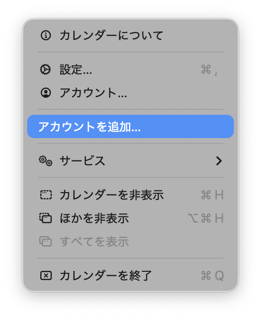
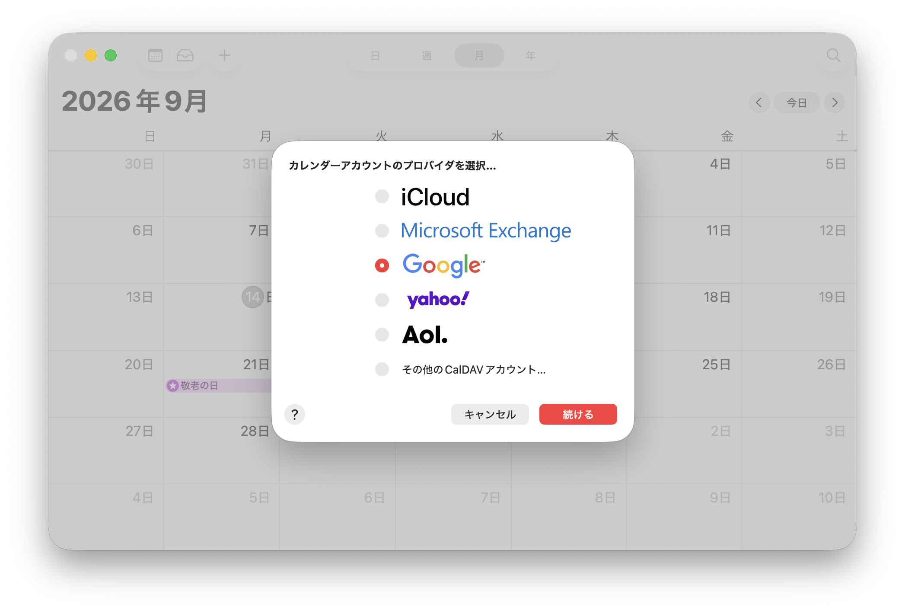
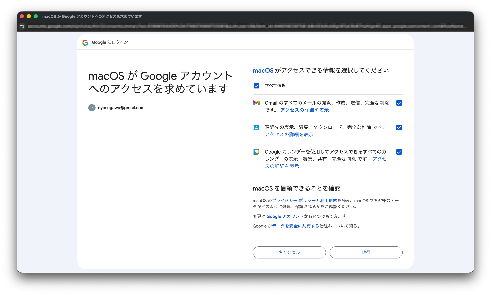
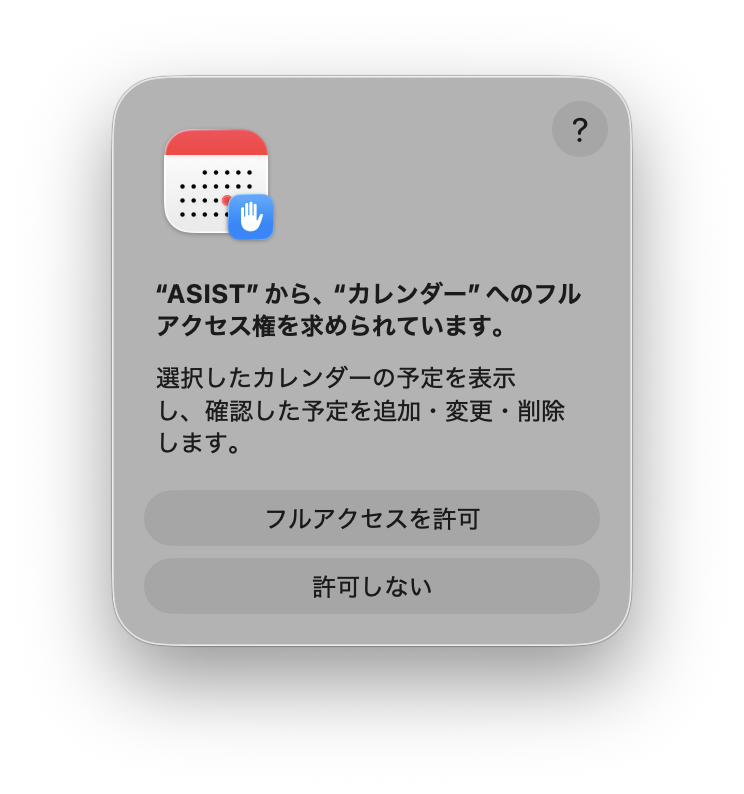
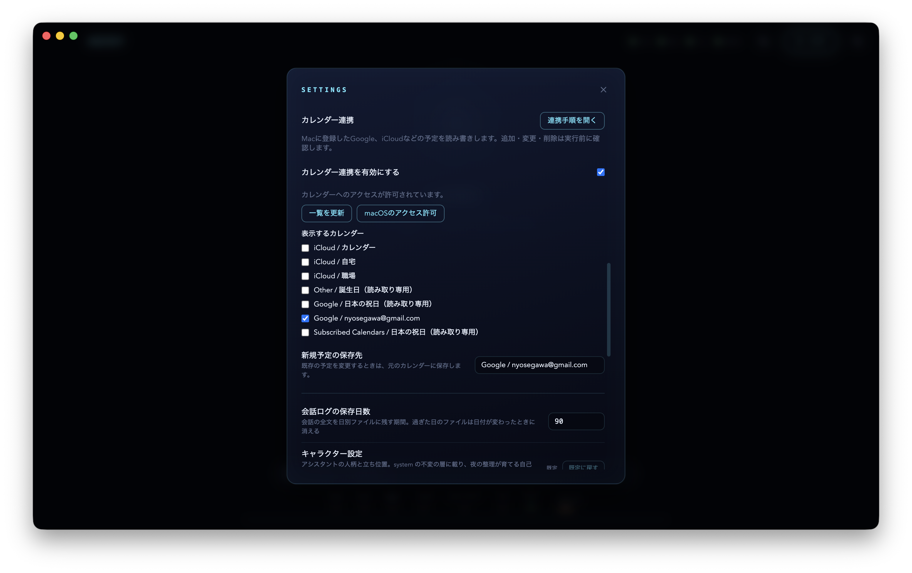

GoogleカレンダーをASISTで使う
下書きです。アクセス許可と対象カレンダー・保存先の選択まで、実際の画面を掲載しています。予定の追加・変更・削除とGoogle側への同期は、動作確認が残っています。
ASISTは、macOSに登録されたカレンダーをEventKit経由で読み書きします。Googleへのログインと同期はmacOSが担当します。すでにMacのカレンダーにGoogleの予定が表示されている場合は、手順4から始めてください。
1. カレンダーのアカウントを追加する
Macの「カレンダー」アプリを開き、メニューバーの「カレンダー」→「アカウントを追加…」を選びます。

2. Googleを選ぶ
「Google」を選択して「続ける」を押し、利用するGoogleアカウントにログインします。

3. macOSにカレンダーへのアクセスを許可する
「macOSがGoogleアカウントへのアクセスを求めています」と表示されたら、Googleカレンダーの権限を確認して続行します。この画面はmacOSへの許可です。ASISTへの許可は次の手順で行います。
画像にはGmailと連絡先も選択されていますが、ASISTのカレンダー機能はメールと連絡先を利用しません。それらの選択はMacのメール・連絡先アプリを使うかどうかに応じて判断してください。

アカウント追加後、macOSの「システム設定」→「インターネットアカウント」→追加したGoogleアカウントで「カレンダー」が有効になっていることを確認します。Macの「カレンダー」アプリに予定が表示されるまで待ちます。
4. ASISTで連携と保存先を設定する
ASISTの設定画面で「カレンダー連携を有効にする」をオンにします。macOSの確認画面で「フルアクセスを許可」を押してください。

- 「表示するカレンダー」で、予定の表示・検索に使うものを選びます。
- 「新規予定の保存先」で、追加する予定を保存するカレンダーを選びます。Googleに反映したい場合はGoogleアカウントのカレンダーを選んでください。
設定は操作するたびに保存されます。既存の予定の変更・削除は、表示対象に選んだカレンダー内で行います。既存の予定を変更しても、新規予定の保存先には移しません。

画像のアカウント名は設定例です。ご自身が利用するカレンダーを選択してください。
5. 動作を確認する
「今日の予定を見せて」と話しかけ、Macのカレンダーと同じ予定が表示されることを確認します。次に「明日の10時から10時半まで、動作確認という予定を入れて」と依頼します。
確認画面でカレンダー名、日付、時間、件名を確認して「この内容で実行」を押します。「キャンセル」を押すと保存しません。Google Calendarにも反映されることを確認してください。ASISTの「保存済み」はMac側への保存を示し、Google側の同期完了を保証するものではありません。
確認後は「明日の動作確認の予定を削除して」と依頼し、削除の確認画面で承認してください。
うまく連携できない場合
- アクセスを拒否した場合は、ASISTの「macOSのアクセス許可」から設定を開き、カレンダーのフルアクセスを許可します。ASISTに戻り「一覧を更新」を押してください。
- カレンダーが表示されない場合は、Macの「カレンダー」アプリに予定が表示されるか確認します。アカウントを追加し直した場合は、ASISTでも表示対象と保存先を選び直してください。
- 共有・購読カレンダーなど、書き込み権限のないカレンダーは表示にだけ利用できます。
- 繰り返し予定と招待付き予定は表示・検索できますが、ASISTから変更・削除はできません。Macの「カレンダー」アプリで操作してください。
- Googleに反映されない場合は、Macのネットワークとアカウントの同期状態を確認してください。結果が不明なときに同じ追加操作を繰り返さないでください。
予定データの扱い
macOSのアクセス許可はカレンダー全体に対する許可です。ASISTは、表示対象として選択したカレンダーを検索し、指定した保存先に新しい予定を作ります。連携をオフにするとASISTからの予定の読み書きを止めます。OSの許可も取り消す場合はmacOSの設定で変更してください。
会話で取得した予定の情報は、返答の生成のためにAnthropic APIへ送信されます。ASISTの会話履歴や記憶の処理にも残る場合があります。Googleのログイン情報はASISTでは管理しません。